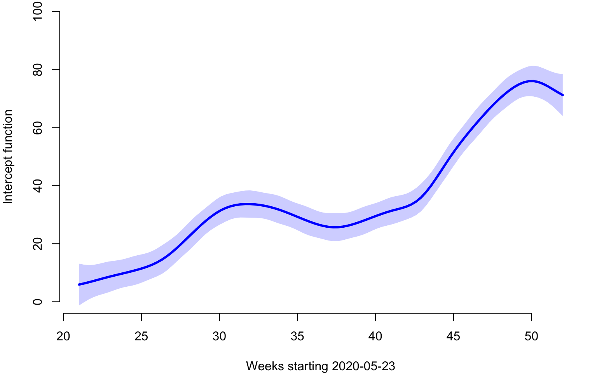

In this document we show how to download the 2020 US weekly excess
all-cause and Covid-19 mortality. We explain the overall structure and
provide a few simple plots to explore the data. The data were processed
from several sources and stored in the refund package. We
used three files to produce this processed data.
The first file contains the the all-cause US weekly mortality data (week ending on 2017-01-14 to week ending on 2021-04-10) for a total of \(222\) weeks. Data are made available by the National Center for Health Statistics. More precisely, the dataset link is called National and State Estimates of Excess Deaths. It can be accessed from this website. A direct link to the file can be accessed here.
The second file contains weekly COVID-19 mortality data (week ending on 2020-01-04 to week ending on 2021-04-17) for a total of \(68\) weeks. Data are made available by the National Center for Health Statistics. More precisely, the dataset link is called National and State Estimates of Excess Deaths. It can be accessed from this website. A direct link to the file can be accessed here.
The third file contains the estimated population size for all US states and territories as of 2020-07-01. The source for these data is Wikipedia.
Read the data and show the variable names in the list.
library(refund)
data("COVID19")
CV19 <- COVID19
names(CV19)
## [1] "US_weekly_mort" "US_weekly_mort_dates"
## [3] "US_weekly_mort_CV19" "US_weekly_mort_CV19_dates"
## [5] "US_weekly_excess_mort_2020" "US_weekly_excess_mort_2020_dates"
## [7] "US_states_names" "US_states_population"
## [9] "States_excess_mortality" "States_excess_mortality_per_million"
## [11] "States_CV19_mortality" "States_CV19_mortality_per_million"We will now describe every variable.
US_weekly_mort: A numeric vector of length \(207\), which contains the total number of
weekly all-cause deaths in the US from January 14, 2017 to December 26,
2020.
US_weekly_mort_dates: A vector of dates of length
\(207\), which contains the weeks
corresponding to the US_weekly_mort vector.
US_weekly_mort_CV19: A numeric vector of length
\(52\), which contains the total number
of weekly COVID 19 deaths in the US from January 4, 2020 to December 26,
2020
US_weekly_mort_CV19_dates: A vector of dates of
length \(52\), which contains the weeks
corresponding to the US_weekly_mort_CV19 vector.
US_weekly_excess_mort_2020: A numeric vector of
length \(52\), which contains the US
weekly excess mortality (total mortality in one week in 2020 minus total
mortality in the corresponding week of 2019) from January 4, 2020 to
December 26, 2020.
US_weekly_excess_mort_2020_dates: A vector dates of
length \(52\), which contains the weeks
corresponding to the US_weekly_excess_mort_2020
vector.
US_states_names: A vector of strings containing the
names of \(52\) US states and
territories in alphabetic order. These are the states for which
all-cause and Covid-19 data are available in this data set.
US_states_population: A numeric vector containing
the population of the \(52\) states in
the vector US_states_names estimated as of July 1, 2020.
The order of the vector US_states_population is the same as
that of US_states_names.
States_excess_mortality: A numeric \(52\times 52\) dimensional matrix that
contains the weekly US excess mortality in \(52\) states and territories. Each row
corresponds to one state in the same order as the vector
US_states_names. Each column corresponds to a week in 2020
corresponding to the order in the vector
US_weekly_excess_mort_2020_dates. The \((i,j)\)th entry of the matrix the
difference in all-cause mortality during the week \(j\) of 2020 and 2019 for state \(i\).
States_excess_mortality_per_million: A numeric \(52\times 52\) dimensional matrix that
contains the weekly US excess mortality in \(52\) states and territories per one million
individuals. This is obtained by dividing every row (corresponding to a
state) of States_excess_mortality by the population of that
state stored in US_states_population and multiplying by one
million.
States_CV19_mortality: A numeric \(52\times 52\) dimensional matrix that
contains the weekly US Covid-19 mortality in \(52\) states and territories. Each row
corresponds to one state in the same order as the vector
US_states_names. Each column corresponds to a week in 2020
corresponding to the order in the vector
US_weekly_excess_mort_2020_dates.
States_CV19_mortality_per_million: A numeric \(52\times 52\) dimensional matrix that
contains the weekly US Covid-19 mortality in \(52\) states and territories per one million
individuals. This is obtained by dividing every row (corresponding to a
state) of States_CV19_mortality by the population of that
state stored in US_states_population and multiplying by one
million.
We will use these data to make some exploratory plots and illustrate the concept of function on function regression.
#Load packages
library(fields)Extract the necessary information from the data list. Give variables shorter names.
#Date indicating weeks from the beginning of 2020
current_date <- CV19$US_weekly_excess_mort_2020_dates
#Names of states and territories considered in the analysis
new_states <- CV19$US_states_names
#Excess mortality as a function of time and state
Wd <- CV19$States_excess_mortality_per_million
#Columns are weeks, rows are states
colnames(Wd) <- 1:52
#Population of states
pop_state_n <- CV19$US_states_population
names(pop_state_n) <- new_statesThe data we are interested in is stored in Wd. Each row
in this data matrix corresponds to a state or territory (District of
Columbia and Puerto Rico). Every column contains the weekly all-cause
excess death rate per one million residents since the beginning of 2020.
So, the data matrix is \(52\times 52\)
dimensional because there are \(50\)
states and \(2\) territories (Puerto
Rico and District of Columbia) and \(52\) weeks.
Make a plot of weekly number of excess deaths comparing 2020 with 2019 for each state. There are three states emphasized each using a different color: New Jersey (green), Louisiana (red), California (plum). The x-axis corresponds to 52 weeks starting with (the week ending) on January 4, 2020 and ending with (the week ending) on December 26, 2020. The y-axis is expressed in all-case excess mortality rate per one million residents. This figure illustrates the problem of studying the association between the pattern of excess mortality in each state after May 16, 2020 given the patterns of excess mortality before and including May 16, 2020 (shown as a vertical blue line). data before May 16, 2020 is shown as lines and after May 16, 2020 as dots to emphasize the different roles played by the data in the two distinct periods.
The primary objective here is to explore the association between these patterns and not to predict. Indeed, in this situation all mortality is recorded in each state at the same time and there is no point to predict data from a new state that may be unobserved.
#This is where the FoFR is conducted
cutoff <- 20
par(mfrow = c(1, 1))
cmar <- c(5, 5, 4, 4)
par(mar = cmar)
for(i in 1:length(new_states)){
ylabel <- paste("US states weekly excess deaths/million")
xlabel <- paste("Weeks starting January 2020")
#Plot only for first state. For others add lines
if(i==1){
par(bg = "white")
#Here plot the date versus cumulative excess mortality (hence the cumsum)
plot(current_date, Wd[i,], type = "l", lwd = 1.5,
col = rgb(0, 0, 0, alpha = 0.1), cex = 1, xlab = xlabel,
ylab = ylabel, ylim = c(-50, 400), bty = "n")
}else{
lines(current_date, Wd[i,], lwd = 1, col = rgb(0, 0, 0, alpha = 0.1))
}
}
emphasize <- c("New Jersey", "Louisiana", "California", "Maryland", "Texas")
col_emph <- c("darkseagreen3", "red", "plum3", "deepskyblue4", "salmon")
emph_state_ind <- match(emphasize, new_states)
for(i in 1:3){
lines(current_date[1:cutoff], Wd[emph_state_ind[i], 1:cutoff], lwd = 2.5, col = col_emph[i])
points(current_date[(cutoff+1):dim(Wd)[2]], Wd[emph_state_ind[i], (cutoff+1):dim(Wd)[2]], pch = 19, cex = 0.8, col = col_emph[i])
}
lines(c(current_date[cutoff], current_date[cutoff]), c(-50, 400), col = "blue", lwd = 2.5)We are fitting the following standard linear Function on Function Regression (FoFR) \[W_i(s_j)=f_0(s_j)+\int X_i(u)\beta(s_j,u)du+\epsilon_i(s_j)\;.\] The functions \(W_i:\{21,\ldots,52\}\rightarrow \mathbb{R}\) are the observed excess mortality observed at weeks \(21\) through \(52\) for state or territory \(i\). The functions \(X_i:\{1,\ldots,20\}\rightarrow \mathbb{R}\) are the observed excess mortality observed at weeks \(1\) through \(20\) for state or territory \(i\). Thus, given a “present”, in our case week \(20\), we regress the “future” trajectory of all-cause weekly excess mortality, \(W_i(\cdot)\), on the “past” trajectory of all-cause weekly excess mortality, \(X_i(\cdot)\). The nonparametric function \(f_0(s_j)\) can be interpreted as the “marginal mean” of the “future” trajectory of the all-cause weekly excess mortality and corresponds to a zero effect, \(\beta(\cdot,\cdot)\), of the past on the future. The association between the future and past trajectories of all-cause weekly mortality is captured by the function \(\beta:\{21,\ldots,52\}\times\{1,\ldots,20\}\rightarrow \mathbb{R}\). The domain of this function is the Kronecker product of the domains of the “future” and “past” trajectories.
We now show how to implement FoFR where the outcome is the weekly US
states and territories excess mortality in the last 32 weeks of 2020 and
the predictor is the first 20 weeks of 2020. The first part is to
separate the predictor and outcomes for pffr and identify
the points where the predictor is observed, s, and where
the outcome is observed, t. The predictor and outcomes are
stored in matrices with the same number of rows, where each row
corresponds to a subject (in this case a state or territory). The number
of columns of the predictor matrix is equal to the number of points
where the predictor function is evaluated (in our case
cutoff). The number of columns of the outcome matrix is
equal to the number of points where the outcome function is evaluated
(in our case the number of weeks in a year, \(52\) minus cutoff).
#The predictor and outcomes matrices
Wpred <- Wd[,1:cutoff]
Wout <- Wd[,(cutoff+1):dim(Wd)[2]]
#The domains of the predictor and outcome functions
s <- 1:cutoff
t <- (cutoff+1):dim(Wd)[2]
#Conduct pffr (no missing data)
m1 <- pffr(Wout ~ ff(Wpred, xind = s), yind = t)Extract some stuff to plot. First extract and plot the nonparametric
mean function. Here we extract the pure intercept (not time dependent)
and the time varying intercept and combine them. They are typically
separated in nonparametric contexts because there are multiple
nonparametric components. We could show just the time varying component,
but we found that to be less interpretable. The reason we are doing this
is to provide better plots than the standard plot.pffr()
function, which can be implemented via the call
plot(m1).
#Extract all the coefficient information
allcoef <- coef(m1)
#Extract the pure intercept (not time varying)
intercept_fixed <- allcoef$pterms[1]
#Extract the time varying intercept (stored in smterms)
intercoef <- allcoef$smterms$Intercept$coef
#Extract the points where the intercept is evaluated
interx <- intercoef$t.vec
#Obtain the intercept as the sum between the time invariant and time variant intercepts
intersm <- intercept_fixed + intercoef$value
#Obtain the standard error of the time varying SE.
interse <- intercoef$se
par(mar = c(4, 4, 0, 1))
#Make a nice plot of the intercept together with its pointwise 95% confidence interval
plot(interx, intersm, type = "l", col = "blue", lwd = 3, bty = "n",
ylim = c(0, 100),xlab = "Weeks starting 2020-05-23",
ylab = "Intercept function")
xpol <- c(interx, interx[length(interx):1])
ypol <- c(intersm - 1.96 * interse, intersm[length(interx):1] + 1.96 * interse[length(interx):1])
polygon(xpol, ypol, col = rgb(0, 0, 1, alpha = 0.2),
border = NA)
We now plot the smooth FoFR surface. Again, we try to provide a plot
that is better than the standard plot(m1) available in
pffr. For this, we need to extract the smooth surface and
to make a heat map with a legend attached to it.
#Extract the smooth coefficients. They are stored in a vector, but they are then transformed into a matrix
smcoef <- allcoef$smterms$`ff(Wpred,s)`$value
#Extract the predictor functional arguments
xsm <- allcoef$smterms$`ff(Wpred,s)`$x
#Extract the outcome functional arguments
ysm <- allcoef$smterms$`ff(Wpred,s)`$y
#Transform the smooth coefficients into a matrix to prepare for plotting
smcoef <- matrix(smcoef, nrow = length(xsm))
#Use image.plot in the fields package to display the smooth coefficient
image.plot(xsm, ysm, smcoef,
xlab = "Weeks starting January 2020",
ylab = "Weeks starting 2020-05-23",
main = "",
axis.args = list(at = c(-0.1, 0.0, 0.1, 0.2, 0.3)),
legend.shrink = 0.8,
legend.line = -1.5, legend.width = 0.5)Extract the fitted values and residuals. Plot them in the same plot.
par(mfrow = c(2, 1), mar = c(4.5, 4.5, 3, 2))
#First panel, plot the mean function
fitted_values <- fitted(m1)
residual_values <- residuals(m1)
image.plot(21:52, 1:52, t(fitted_values),
main = "Fitted values",
xlab = "Weeks starting 2020-05-23",
ylab = "States and territories",
axis.args = list(at = c(0.0, 20, 40, 60, 80)),
legend.shrink = 0.8,
legend.line = -1.5, legend.width = 0.5)
image.plot(21:52, 1:52, t(residual_values),
main = "Residual values",
xlab = "Weeks starting 2020-05-23",
ylab = "States and territories",
axis.args = list(at = c(-100, -50, 0, 50, 100)),
legend.shrink = 0.8,
legend.line = -1.5,legend.width = 0.5)We will now investigate the relationship between predicted and observed values for a few states. Here we will look at the predictions after week 20 for New Jersey, Louisiana, California, and Maryland.
par(mfrow = c(2, 2), mar = c(4.5, 4.5, 3, 2))
for(i in 1:4){
#Here plot the date versus cumulative excess mortality for the state
plot(current_date, Wd[emph_state_ind[i],],
type = "l", lwd = 1.5,
col = rgb(0, 0, 0, alpha = 0.1), cex = 1,
xlab = "Weeks starting January 2020",
ylab = "Weekly Excess Deaths/Million", ylim = c(-50, 400), bty = "n",
main = emphasize[i])
#Plot data before cutoff (the past)
lines(current_date[1:cutoff], Wd[emph_state_ind[i], 1:cutoff],
lwd = 2.5, col = col_emph[i])
#Plot the data after the cutoff (the future)
points(current_date[(cutoff + 1):dim(Wd)[2]],
Wd[emph_state_ind[i], (cutoff+1):dim(Wd)[2]],
pch = 19, cex = 0.8, col = col_emph[i])
#Indicate the separation between "past and future"
lines(c(current_date[cutoff], current_date[cutoff]),
c(-50, 400), col = "blue", lwd = 2.5)
#Plot the pffr predictions to compare with observed data
lines(current_date[(cutoff + 1):dim(Wd)[2]], fitted_values[emph_state_ind[i],],
lwd = 2.5, col = "darkred")
}Investigate the residuals, test normality, and identify potential outliers.
par(mfrow = c(2, 2), mar = c(4.5, 4.5, 3, 2))
#Display the qq-plot versus a theoretical Normal distribution
qqnorm(residual_values, pch = 19, col = "blue", cex = 0.8, bty = "n", main = "QQ-plot of residuals")
qqline(residual_values, col = "red", lwd = 2.5, lty = 2)
#Display predictions and observed data for North Carolina
#Here plot the date versus cumulative excess mortality for the state
three_states <- c(34, 35, 43)
cols <- c("cyan1", "darkslateblue", "lightslategrey")
for(i in 1:3){
plot(current_date, Wd[three_states[i],],
type = "l", lwd = 1.5,
col = rgb(0, 0, 0, alpha = 0.1), cex = 1,
xlab = "Weeks starting January 2020",
ylab = "Weekly Excess Deaths/Million", ylim = c(-50, 400), bty = "n",
main = new_states[three_states[i]])
#Plot data before cutoff (the past)
lines(current_date[1:cutoff], Wd[three_states[i], 1:cutoff],
lwd = 2.5, col = cols[i])
#Plot the data after the cutoff (the future)
points(current_date[(cutoff + 1):dim(Wd)[2]],
Wd[three_states[i], (cutoff + 1):dim(Wd)[2]],
pch = 19, cex = 0.8, col = cols[i])
#Indicate the separation between "past and future"
lines(c(current_date[cutoff], current_date[cutoff]),
c(-50, 400), col = "blue", lwd = 2.5)
#Plot the pffr predictions to compare with observed data
lines(current_date[(cutoff + 1):dim(Wd)[2]], fitted_values[three_states[i],],
lwd = 2.5, col = "darkred")
}Investigate the correlation of the residuals. We are especially interested in studying any potential residual correlations that are not accounted for by the model.
#Plot the residual correlations
corr_res <- cor(residual_values)
image.plot(21:52, 21:52, corr_res,
xlab = "Weeks starting 2020-05-23",
ylab = "Weeks starting 2020-05-23",
main = "Residual correlations",
axis.args = list(at = c(-.4, -.2, .0, .2, .4, .6, .8, 1.0)),
legend.shrink = 0.8,
legend.line = -1.5, legend.width = 0.5)We now extend the model to see if some of the obsrved variability could be explained by other variables. We now consider a model of the form \[W_i(s_j)=f_0(s_j)+P_if_1(s_j)+\int X_i(u)\beta(s_j,u)du+\epsilon_i(s_j)\;.\] Here the variable \(P_i\) represents the population size of state \(i\) expressed in millions. For example the population of Alabama was \(4.921\) millions. Note that here the effect of the variable is assumed to be time dependent and time dependence is modeled nonparametrically via the function \(f_1(s_j)\).
R code for implementing pffr
#State population expressed in millions
pop_state_n <- pop_state_n / 1000000
#Fit pffr with state population as time dependent variable
m2 <- pffr(Wout ~ ff(Wpred, xind = s) + pop_state_n, yind = t)
#Extract the estimated coefficients
allcoeff <- coef(m2)
#Extract the population size effects and se for future excess mortality
pop_size_effect <- allcoeff$smterms$`pop_state_n(t)`$value
pop_size_se <- allcoeff$smterms$`pop_state_n(t)`$seWe now plot the time-varying population size effect \(f_1(s_j)\) together with its standard error.
par(mar = c(4, 4, 0, 1))
plot(interx, pop_size_effect, type = "l", col = "blue", lwd = 3, bty = "n",
ylim = c(-2, 2), xlab = "Weeks starting 2020-05-23",
ylab = "Population size effect")
xpol <- c(interx, interx[length(interx):1])
ypol <- c(pop_size_effect - 1.96 * pop_size_se, pop_size_effect[length(interx):1] +
1.96 * pop_size_se[length(interx):1])
polygon(xpol, ypol, col = rgb(0, 0, 1, alpha = 0.2),
border = NA)Here we are interested in a different problem using the CONTENT data. More precisely, at every time point, \(s^*\), we would like to predict the future growth trajectory of an individual based only on the data from that individual up to \(s^*\). The code below shows how to reproduce Figure 6.2 in the book.
#select one subject
content_plt <- content[which(content$id == 301),]
#index of data treated as predictor
threshold <- 200
ind_given <- which(content_plt$agedays <= threshold)
#make the plot
par(mfrow = c(1, 2), mar = c(3.5, 3.5, 2, 2))
plot(content_plt$agedays, content_plt$zwei,
type = "l",
col = "lightgray",
bty = "n",
ylim = c(-1, 1),
xlab = "",
ylab = "",
xaxt = "n")
axis(side = 1, at = c(0, 200, 400, 600))
abline(v = threshold, col = "lightgray", lty = 2)
points(content_plt$agedays[ind_given], content_plt$zwei[ind_given],
col = "blue",
pch = 19)
title(expression("Given" * phantom(" Blue")), col.main = "black", line = 1)
title(expression(phantom("Given") * " Blue"), col.main = "blue", line = 1)
title(xlab = "Age (Days)", line = 2.2)
title(ylab = "zwei", line = 2.2)
plot(content_plt$agedays, content_plt$zlen,
type = "l",
col = "lightgray",
bty = "n",
ylim = c(-1, 1),
xlab = "",
ylab = "",
xaxt = "n")
axis(side = 1, at = c(0, 200, 400, 600))
abline(v = threshold, col = "lightgray", lty = 2)
points(content_plt$agedays[ind_given], content_plt$zlen[ind_given],
col = "blue",
pch = 19)
points(content_plt$agedays[-ind_given], content_plt$zlen[-ind_given],
col = "red",
pch = 19)
title(expression("Predict" * phantom(" Red")), col.main = "black", line = 1)
title(expression(phantom("Predict") * " Red"), col.main = "red", line = 1)
title(xlab = "Age (Days)", line = 2.2)
title(ylab = "zlen", line = 2.2)We now show how to use pffr in the CONTENT study, where
both the outcome and the predictor are sparsely observed functions. We
discussed the problem of predicting the future growth trajectory of an
individual at a particular time point based on their data up to that
point. Specifically, we now consider the association between the z-score
of length in the \(101\) days or later
and the z-scores of length and weight in the first \(100\) days. The choice of \(100\) days as the threshold is arbitrary,
and other thresholds could be used instead.
The code below shows how to use the pffr function to
answer this question and reproduce Figure 6.10 in the book.
#Load packages
library(face)
library(refund)
library(fields)data(content)
#Split into old and new data
content_old <- content[which(content$agedays < 100),]
content_new <- content[which(content$agedays >= 100),]
#Reorganize the data into fpca format
content_zlen_old <- data.frame(argvals = content_old$agedays,
subj = content_old$id,
y = content_old$zlen)
content_zwei_old <- data.frame(argvals = content_old$agedays,
subj = content_old$id,
y = content_old$zwei)
content_zlen_new <- data.frame(argvals = content_new$agedays,
subj = content_new$id,
y = content_new$zlen)
#Sparse fpca
fpca_zlen_old <- face.sparse(data = content_zlen_old, calculate.scores = TRUE, argvals.new = 1:100)
fpca_zwei_old <- face.sparse(data = content_zwei_old, calculate.scores = TRUE, argvals.new = 1:100)
fpca_zlen_new <- face.sparse(data = content_zlen_new, calculate.scores = TRUE,
argvals.new = seq(101, max(content_new$agedays), 2))
#Obtain interpolated values on a regular grid
id <- fpca_zlen_old$rand_eff$subj
xind <- fpca_zlen_old$argvals.new
yind <- fpca_zlen_new$argvals.new
zlen_old_it <- fpca_zlen_old$rand_eff$scores %*% t(fpca_zlen_old$eigenfunctions)
zwei_old_it <- fpca_zwei_old$rand_eff$scores %*% t(fpca_zwei_old$eigenfunctions)
zlen_new_it <- fpca_zlen_new$rand_eff$scores %*% t(fpca_zlen_new$eigenfunctions)
colnames(zlen_old_it) <- colnames(zwei_old_it) <- fpca_zlen_old$argvals.new
colnames(zlen_new_it) <- fpca_zlen_new$argvals.new#Fit PFFR
m_content <- pffr(zlen_new_it ~ ff(zlen_old_it, xind = xind) + ff(zwei_old_it, xind = xind),
yind = yind)
#Extract coefficients
allcoef <- coef(m_content)
## using seWithMean for s(yind.vec) .
#Extract the smooth coefficients. They are stored in a vector, but they are then transformed into a matrix
smcoef_zlen <- allcoef$smterms$`ff(zlen_old_it,xind)`$value
smcoef_zwei <- allcoef$smterms$`ff(zwei_old_it,xind)`$value
#Extract the predictor functional arguments
xsm_zlen <- allcoef$smterms$`ff(zlen_old_it,xind)`$x
xsm_zwei <- allcoef$smterms$`ff(zwei_old_it,xind)`$x
#Extract the outcome functional arguments
ysm_zlen <- allcoef$smterms$`ff(zlen_old_it,xind)`$y
ysm_zwei <- allcoef$smterms$`ff(zwei_old_it,xind)`$y
#Transform the smooth coefficients into a matrix to prepare for plotting
smcoef_zlen_plot <- matrix(smcoef_zlen, nrow=length(xsm_zlen))
smcoef_zwei_plot <- matrix(smcoef_zwei, nrow=length(xsm_zwei))
#Use image.plot in the fields package to display the smooth coefficient
par(mfrow = c(1, 2), mar = c(5, 5, 5, 5))
image.plot(xsm_zlen, ysm_zlen, smcoef_zlen_plot,
xlab = "Days 1 to 100",
ylab = "Days 101 to 701",
main = "zlen (Days 101 to 701) on zlen (Days 1 to 100)",
# axis.args = list(at = c(-0.1,0.0,0.1,0.2,0.3)),
# legend.shrink = 0.8,
# legend.line = -1.5,
legend.width = 0.5)
image.plot(xsm_zwei, ysm_zwei, smcoef_zwei_plot,
xlab = "Days 1 to 100",
ylab = "Days 101 to 701",
main = "zlen (Days 101 to 701) on zwei (Days 1 to 100)",
# axis.args = list(at = c(-0.1,0.0,0.1,0.2,0.3)),
legend.shrink = 0.8,
legend.line = -1.5,
legend.width = 0.5)TBA
TBA